Set Up Three-Point Lighting in One Step
In a scene with no lights, create the three lights of a three-point setup (key, fill, and rim) at once and aim them at Suzanne.


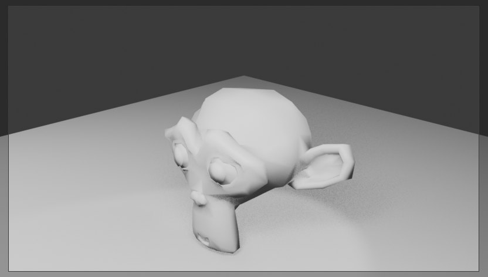
Follow the worked example · Set Up Three-Point Lighting in One Step
SmartTools Add-on Manual
Version 1.0.0 / November 19, 2026 / For Blender 5.1.2
SmartCamLight Suite lets you pick the cameras and lights in your scene from a list and change their settings on the spot. Each camera remembers its own resolution, output location, file format, and frame range, and Apply copies them to the scene's render settings. The same panel also provides composition guides, camera rigs (a setup that keeps a camera pointed at its subject), overscan (rendering with extra margin added around the same picture), and physical motion blur. On the light side, you get light linking (deciding which objects a light illuminates), automatic studio lighting setups, softboxes, and automatic sky creation (Dynamic Sky). The panel is divided into three section headers: Always-on Toggles, Camera, and Light. Click the "?" on the right of each section header to see an explanation of that section.

In Object Mode, press N over the 3D Viewport and select Smart CamLight. Expand Light to access the lighting controls.
The full tab shows Camera and Light as separate headings.
Exclude only Floor from the light. The subject stays lit; restoring the checkbox brings the floor light back in the same shot.

Before you try it Check the render setup in the walkthrough and use the same light.
Follow the worked exampleDownload the illustrated example (PNG)Setup and troubleshooting help
In a scene with no lights, create the three lights of a three-point setup (key, fill, and rim) at once and aim them at Suzanne.

Follow the worked example · Set Up Three-Point Lighting in One Step
Set the camera's own resolution to the 1:1 preset and copy it to the scene with "Apply". The camera frame becomes square.

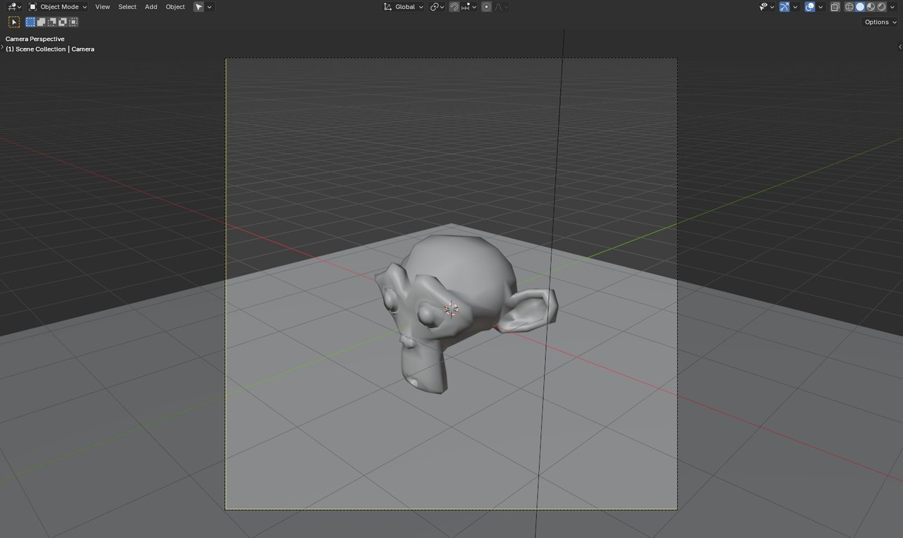
Follow the worked example · Make the Camera's Aspect Ratio Square (1:1)
An add-on that brings camera and light management together in one Sidebar panel.
This is how the screen changes when you use this add-on. Chapter 5 walks through the exact steps in the "Example" boxes for each feature.
ExampleSet Up Three-Point Lighting in One Step(demonstrated on Suzanne)
In a scene with no lights, create the three lights of a three-point setup (key, fill, and rim) at once and aim them at Suzanne.
What to look for: With no lights, the scene is pitch black and almost nothing is visible, but after applying, Suzanne and the floor are lit by three lights: a strong key light (front right), a weak fill light (front left), and a rim light from behind.
This chapter walks through the features unique to this add-on, using numbered callouts on each figure. The numbers in a figure match the numbered list below it. Click a figure to enlarge it. Each individual setting is described under its own heading in Chapter 5.
Blender has only one set of resolution and output settings per scene, so to export with several cameras, such as landscape and portrait or close and wide, you have to rewrite the settings every time. With SmartCamLight Suite, each camera holds its own resolution, output location, file format, and more, and you can copy them to the scene with each click. Click "All Cameras" and every camera that has custom camera settings turned on is rendered and saved, one at a time.
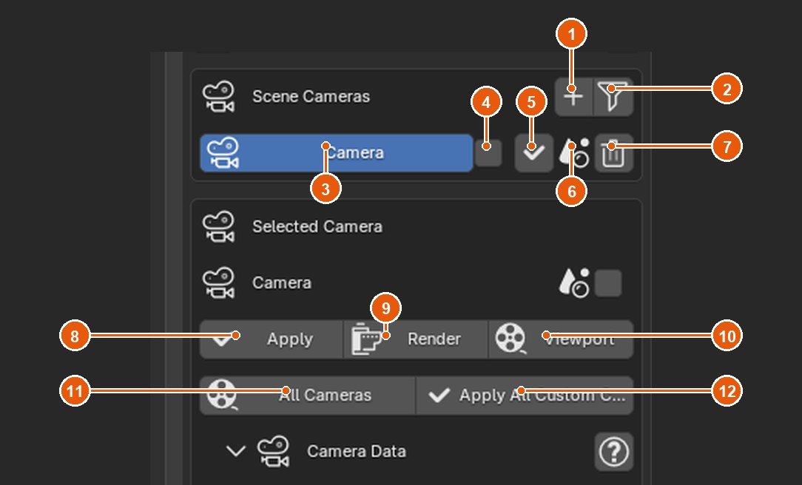
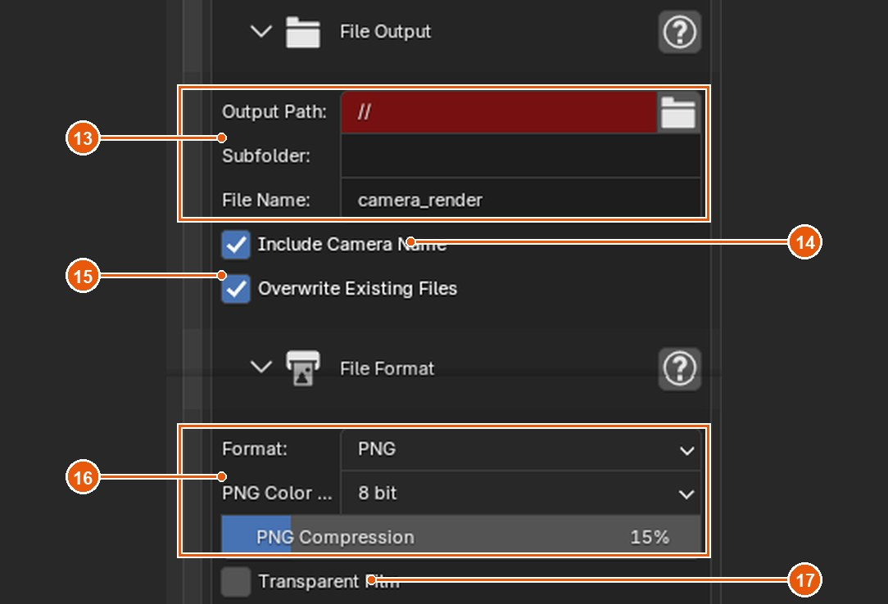
Settings in detail: 5-3. Scene Cameras, 5-4. Selected Camera, 5-6. Resolution, 5-8. File Output, 5-9. File Format
Instead of placing lights one by one and aiming each of them, build a classic studio setup from a preset in one step. You can also set the count, type, and layout (Circle, Grid, Random, Line) and place the lights all at once around the object you select. The before and after images are an example of applying "Three Point" to a scene with no lights.
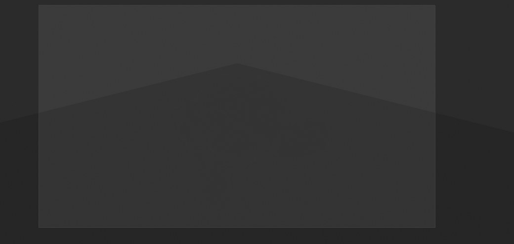
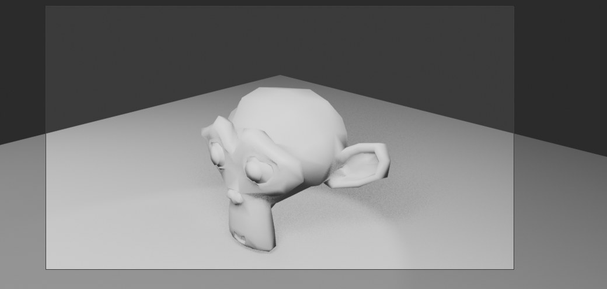
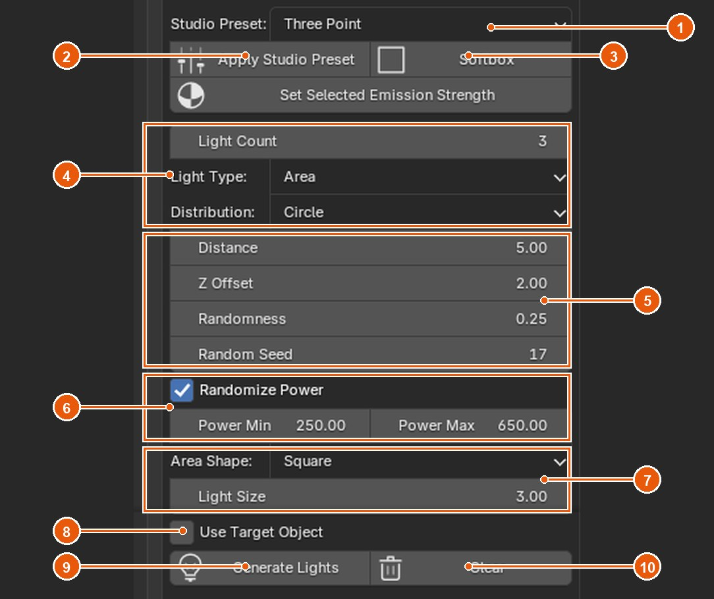
Settings in detail: 5-20. Light Generator
Blender's light linking is a feature that limits, by collection, the objects a light illuminates and the objects that cast shadows from it. Normally you have to create the collections and assign them yourself, but here "Initialize" and + are all you need. The before and after images are an example where the same light was limited to illuminating only Suzanne. The light's position and brightness were not changed.

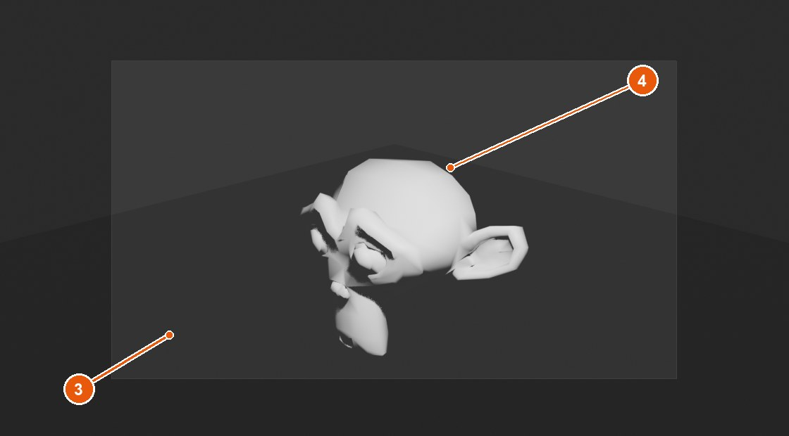
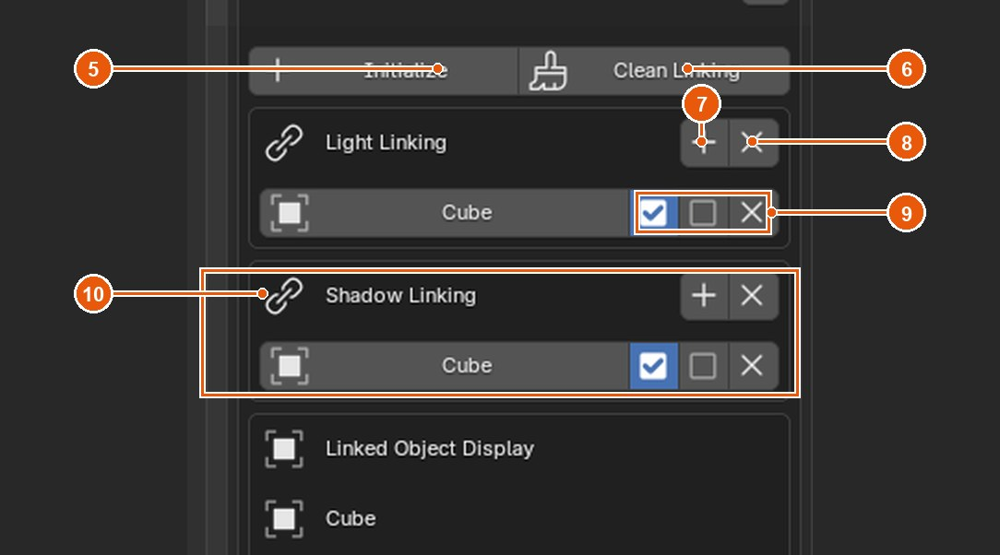
Settings in detail: 5-19. Light Linking
How to install the add-ons, how to change the interface language, and how the N panel and the "?" help buttons work in every add-on are covered in the "SmartTools Overall Specification". Please read chapters 2 to 5 there first.
| ZIP to install | SmartCamLightSuite_1.0.0.zip |
|---|---|
| Name shown in Blender | Smart CamLight |
| Supported Blender | 5.1.2 |
It is in the "Smart CamLight" tab of the 3D Viewport Sidebar (N panel). The same panel can also appear in the Sidebar of the Image Editor, Node Editor, Sequencer, Movie Clip Editor, Dope Sheet, Graph Editor, NLA, Text Editor, File Browser, and Spreadsheet. Which editors show it follows the settings in Smart Tools Manager. If Smart Tools Manager is not installed, it appears in all of these editors.
| Editors | 3D Viewport, Image Editor (UV Editor), Node Editor, Video Sequencer, Movie Clip Editor, Dope Sheet, Graph Editor, NLA Editor, Text Editor, File Browser, Spreadsheet |
|---|---|
| Tab | Smart CamLight |
| Mode | Object Mode |
Each heading is explained in order from the top of the panel. Click the "?" to the right of a heading to show the same explanation in Blender. The blue "Example" boxes show real operations on simple models such as Suzanne, with the 3D Viewport before and after.
The panel is divided into three section headers. Click the triangle on the left of a section header, or its name, to open or close it. The "?" on the right shows an explanation of that section. At first, "Camera" and "Light" are open.
LocationSidebar > Smart CamLight tab
| Item | What it does |
|---|---|
| Always-on Toggles | A section header that groups how settings are saved and the on/off switches for automatic features. |
| Camera | A section header that groups the camera list and the settings of the selected camera. |
| Light | A section header that groups the light list, the settings of the selected light, Light Generator, and Dynamic Sky. |
| ? | Shows an explanation of that section header in a popup. Opening help does not change the scene. |
Turn on or off, one by one, how the panel settings are saved and the features that run automatically, for example when the frame changes. The button on the right switches between "On" and "Off" each time you click it. Only "N-panel State Save" starts as "On"; all the others start as "Off".
LocationSmart CamLight > Always-on Toggles
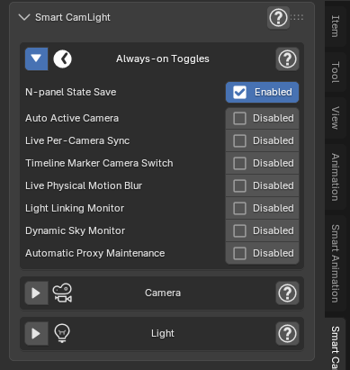
| Item | What it does |
|---|---|
| N-panel State Save | When enabled, every change to the panel settings is saved to the settings file (JSON) immediately. When disabled, the settings are saved all at once when you save or load a .blend file, disable the add-on, or quit Blender. The contents of the cameras and lights themselves are stored in the .blend file. |
| Auto Active Camera | When you select a camera in the 3D Viewport or elsewhere and make it active, that camera becomes the scene's active camera. |
| Live Per-Camera Sync | Every time the frame changes, copies the scene's active camera's resolution, output, frame range, stamp, and motion blur settings to the scene's render settings. Only cameras with custom camera settings enabled are affected. For a camera with "Enable Overscan" turned on, the expanded resolution and shortened focal length are also written each time. |
| Timeline Marker Camera Switch | Every time the frame changes, looks at the most recent marker that has a camera bound to it and switches the active camera automatically. |
| Live Physical Motion Blur | Every time the frame changes, recalculates the motion blur values from the active camera's shutter speed or shutter angle. It works only for cameras with "Enable Physical Motion Blur" turned on. |
| Light Linking Monitor | Clears the selection only when the object you had selected as a linked object is deleted. |
| Dynamic Sky Monitor | Updates the sky and sun light created by SmartCamLight Suite only when the sky settings or the world change. |
| Automatic Proxy Maintenance | Automatically cleans up only the outdated ones among the helper objects created by SmartCamLight Suite. |
A list of the cameras in the scene, sorted by name. Click a name to select that camera and make it the scene's active camera. If the scene has no cameras, "No camera exists in this scene." appears.
LocationSmart CamLight > Camera > Scene Cameras
| Item | What it does |
|---|---|
| + (Add Smart Camera) | Creates a new camera, enables custom camera settings for it, and makes it the active camera. |
| Funnel icon (show custom cameras only) | Lists only the cameras that have custom camera settings enabled. The other cameras are not deleted. |
| Camera name button | Selects that camera and makes it the active camera. A hidden camera is shown first and then selected. |
| Checkbox (Enable Custom Camera Settings) | Turn it on to use this camera's render, output, guide, overscan, motion blur, review, and rig settings. A camera without it turned on cannot be copied to the scene with Apply. |
| Checkmark icon (Apply Camera Settings) | Copies this camera's settings to the scene's render settings. |
| Arrow icon (Select Camera) | Appears on the rows of cameras that are not the active camera. Click it to make that camera the active camera. The active camera's row shows a scene icon instead. |
| Trash can (Delete Camera) | Deletes that camera from the scene. The guides, rig, path, and POV text that SmartCamLight Suite attached to that camera are deleted along with it. Other cameras are not deleted. |
Shows the name of the camera you selected in the list, along with buttons for frequently used operations. If nothing is selected in the list, the camera of the active object, or the scene's active camera, is shown. Below this come the collapsible camera settings subpanels.
LocationSmart CamLight > Camera > Selected Camera
| Item | What it does |
|---|---|
| Scene icon next to the camera name | Appears when that camera is the scene's active camera. It is a display only; clicking it does nothing. |
| Checkbox next to the camera name | The same "Enable Custom Camera Settings" as in the list. |
| Apply | Makes this camera the active camera and copies its resolution, output format, frame range, stamp, transparent film, and motion blur settings to the scene's render settings. For a camera with "Enable Overscan" turned on, overscan is applied as well. When custom camera settings are disabled, "Custom camera settings are disabled, or the camera was not found." appears and nothing is copied. |
| Render | Temporarily copies this camera's settings to the scene, renders a still image, and saves it to the output path (when "Format" is a movie, the entire frame range is rendered as one movie). When it finishes, the scene's settings are restored. For a camera with custom camera settings disabled, the settings are not copied and the render uses the scene's current settings. It may take some time. |
| Viewport | Temporarily copies the settings in the same way and renders a still image exactly as the viewport shows it (a viewport render). |
| All Cameras | Renders every camera that has custom camera settings enabled, one at a time, copying its settings before each render. When it finishes, the scene's settings are restored. It may take some time. |
| Apply All Custom Cameras | Copies the settings once for every camera that has custom camera settings enabled. The last camera processed becomes the active camera, and its settings remain in the scene. |
Change the selected camera's position and rotation, along with Blender's standard camera settings such as the lens and sensor, all in one place. It is open at first.
LocationSelected Camera > Camera Data
| Item | What it does |
|---|---|
| Object Name | The name of the camera. |
| Location / Rotation / Scale | The camera's position, orientation, and size. |
| Type | The kind of camera, such as perspective or orthographic. |
| Focal Length / Angle | The lens focal length and the angle of the area that appears in the picture. |
| Sensor Width / Sensor Height / Sensor Fit | The size of the camera sensor and which side it is fitted to. |
| Shift X / Shift Y | Shifts the area that appears in the picture horizontally or vertically without rotating the camera. |
| Clip Start / Clip End | Objects closer or farther than these distances do not appear. |
| Display Size | The size of the camera icon in the viewport. |
| Depth of Field | Settings for the range that stays in focus. They are "Use DOF", "Focus Object", "Focus Distance", "F-Stop", and "Blades". |
| Set DOF to Selected Object | Makes the object currently active in the 3D Viewport (other than this camera) the object to focus on (the Focus Object) and also turns on "Use DOF". Select the target object in the 3D Viewport first, then click it. |
Sets the image size used when rendering with this camera. These values are saved per camera and are not copied to the scene until you click Apply. It is open at first.
LocationSelected Camera > Resolution
| Item | What it does |
|---|---|
| Width / Height | The horizontal and vertical pixel counts of the image. They start at 1920 and 1080. |
| Scale | The resolution scale (%). |
| Pixel Aspect X / Pixel Aspect Y | The horizontal-to-vertical ratio of a single pixel. |
| Swap Resolution | Swaps the width and height to switch between landscape and portrait. |
| Aspect ratio presets (16:9 / 9:16 / 1:1 / 2.39:1 / 4:3) | Enters the width and height of a commonly used aspect ratio into this camera's settings. Click Apply to copy them to the scene. |
ExampleMake the Camera's Aspect Ratio Square (1:1)(demonstrated on Suzanne)
Set the camera's own resolution to the 1:1 preset and copy it to the scene with "Apply". The camera frame becomes square.
What to look for: The camera frame changes from widescreen (16:9) to square and extends upward and downward. The scene resolution becomes 1080 × 1080.
Sets the range of frames rendered with this camera. Choose one of two ways to define the range.
LocationSelected Camera > Frame Range
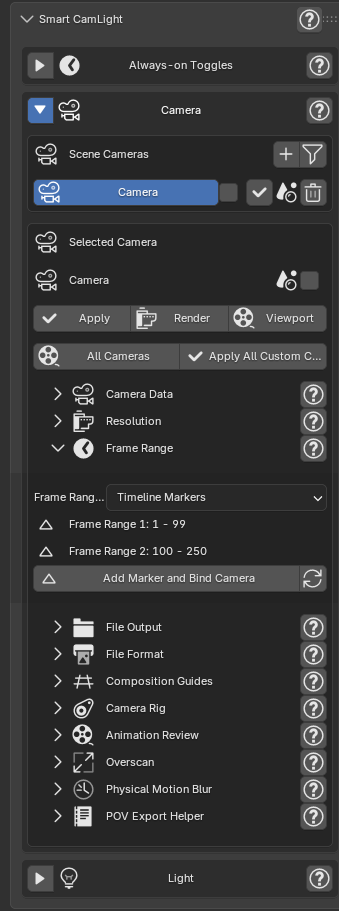
| Item | What it does |
|---|---|
| Frame Range Mode | "Per-Camera Range" uses the start, end, and step saved for this camera. "Timeline Markers" determines the range from the markers bound to this camera. |
| Start / End / Step | Appears when "Per-Camera Range" is selected. The first and last frames, and how many frames apart to render. |
| Sync Timeline Range | Appears when "Per-Camera Range" is selected. When turned on, Apply also copies this range to the scene's start, end, and step. When turned off, the scene's frame range is left unchanged. |
| Frame Range 1: Start - End | With "Timeline Markers", the ranges worked out from the markers are listed here. Each range runs from that marker up to one frame before the next marker that has a camera (or to the end of the scene if there is none). If there are no markers, "No timeline camera markers are bound to this camera." appears. |
| Add Marker and Bind Camera | Creates a marker at the current frame and binds it to this camera. |
| Refresh icon (Update Marker Camera) | Makes the camera of the marker in effect at the current frame the active camera. |
ExampleSwitch Cameras with Timeline Markers(demonstrated on Suzanne)
Bind two cameras to markers. When the frame changes, the camera you are viewing through switches automatically.


What to look for: Frame 1 shows the scene from an angle, and frame 30 shows it from the front. The camera switches at the marker positions without any switching keyframes.
Sets where the images and movies rendered with this camera are saved, and what they are named.
LocationSelected Camera > File Output
| Item | What it does |
|---|---|
| Output Path | The folder to save to. It starts as "//". A path that starts with "//" is relative to the location of the current .blend file, so save the .blend file first. If the field is shown in red, as in the figure, it is Blender's way of telling you that the location could not be found. |
| Subfolder | The name of a folder to create inside the output path. It can be left empty. |
| File Name | The name of the file to save. |
| Include Camera Name | Creates a folder named after the camera inside the output path and saves there. |
| Overwrite Existing Files | Overwrites a file if one with the same name already exists. |
Choose the format of the saved file and set that format's detailed options. Only the fields that suit the selected format appear.
LocationSelected Camera > File Format
| Item | What it does |
|---|---|
| Format | Choose from PNG, JPEG, OpenEXR, H.264 MP4, H.264 MKV, and ProRes MOV. When you click Apply or Render, the "Media Type" under "Output" in the Properties Editor also switches to "Image" or "Movie" to match the format. With a movie format, "Render", "Viewport", and "All Cameras" write the entire frame range as one movie instead of a single still image. |
| PNG Color Depth / PNG Compression | Appear with PNG. The color depth is either "8 bit" or "16 bit". |
| JPEG Quality | Appears with JPEG. |
| EXR Color Depth / EXR Codec / Save EXR Preview | Appear with OpenEXR. The color depth is either "Half Float" or "Full Float". |
| Video Quality / Video Bitrate / GOP Size | Appear with a movie format. Choose the movie quality from "Lossless", "Perceptually Lossless", "High", "Medium", and "Low". |
| Include Audio / Audio Codec / Audio Bitrate | Appear with a movie format. When you turn on "Include Audio", the audio codec ("No Audio", "AAC", "MP3") and audio bitrate fields appear. |
| Transparent Film | Renders with a transparent background. |
| Enable Burn-In Metadata | Burns informational text (a stamp) onto the image. Burn-in is also enabled when "Use Review Stamps" under "Animation Review" is turned on. |
Adds lines to the camera's frame to help you compose the shot. The lines are created as curve objects and become children of the camera (objects that move together with it).
LocationSelected Camera > Composition Guides
| Item | What it does |
|---|---|
| Rule of Thirds | Lines that divide the frame into three parts horizontally and vertically. |
| Center Cross | A cross in the middle of the frame. |
| Safe Area / Safe Area Percentage | A frame, and its size, that shows what stays visible so important things remain even if the edges of the picture are cut off. |
| Guide Line Style | Choose "Solid" (an unbroken line) or "Dashed". |
| Guide Line Width / Guide Color | The thickness and color of the lines. The line width starts at 0.004. Make it smaller if thick lines hide the subject, or larger if the lines are hard to see. |
| Render Guides | Also shows the guide lines in the render result. |
| Create | Creates the guides and leaves the guide objects selected. It replaces this camera's previous guides. After changing settings, click it again to rebuild them. |
| Delete | Deletes only the SmartCamLight Suite guides attached to this camera. |
ExampleAdd Rule-of-Thirds Composition Guides to the Camera View(demonstrated on Suzanne)
Add rule-of-thirds lines, a center cross, and a safe area frame to the camera to make composing shots easier.


What to look for: Yellow rule-of-thirds lines, vertical and horizontal center lines, and an inner frame (the safe area) appear in the camera view. The lines are children of the camera, so they follow along when you move the camera. By default, "Render Guides" is turned off, so they do not appear in review videos or renders. If the lines are thick and hide the subject, lower "Guide Line Width" and click "Create" again.
Creates a setup that keeps the camera pointed at its target. Recording camera keys and baking camera movement (burning it into per-frame keys) are also done here.
LocationSelected Camera > Camera Rig
| Item | What it does |
|---|---|
| Rig Type | "Target Rig" creates a target Empty (a shapeless marker object) and a Track To constraint (a constraint that aims the camera). "Dolly Target Rig" also creates a parent Empty (the dolly), so you can move the camera and aim it separately. Either rig leaves the camera's position unchanged. It starts as "Dolly Target Rig". |
| Target Distance / Target Size | How far in front of the camera to place the target, and the size of the target icon. Changing the size also changes the target icon that already exists. |
| Use Target for DOF | Also uses the target as the object to focus on. |
| Create Camera Rig | Creates the rig and leaves the target selected. When you move the target, the camera turns to face it. This camera's previous rig markers and constraints are replaced with new ones. |
| Curve icon (Create Path from Camera Keys) | Traces the camera's position from "Start" to "End" in "Frame Range" (every "Step" frames) and creates a curve path. |
| Insert Camera Key | Inserts keys for location, rotation, focal length, and focus distance at the current frame. |
| Start Camera Fly View | Switches the 3D Viewport to this camera's view and starts Blender's standard walk navigation. If the view is already the camera view, it stays as it is. Move the camera with the W, A, S, and D keys and the mouse, confirm with a left click, and cancel with Esc. It works only when clicked from the 3D Viewport Sidebar. |
| Bake Camera Transform | Bakes the camera's visible position and rotation into keys from "Start" to "End" in "Frame Range" (every "Step" frames). The camera's parenting is removed. The Track To constraint remains, so moving the target changes the camera's direction. If you do not need it, use "Clear Smart Camera Rigs" to remove the target and constraint. |
| Clear Smart Camera Rigs | For all cameras in the scene, removes the target, dolly, and path objects and Track To constraints created by SmartCamLight Suite. The cameras remain, with their position and orientation as they currently look. |
ExampleMove a Marker to Aim the Camera at It (Camera Rig)(demonstrated on Suzanne)
Create a marker (target) in front of the camera. Simply moving the marker changes where the camera points.

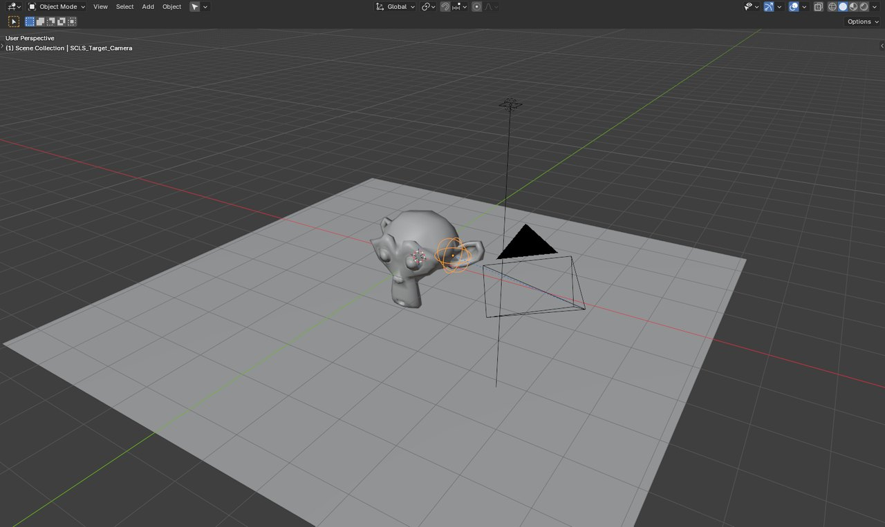
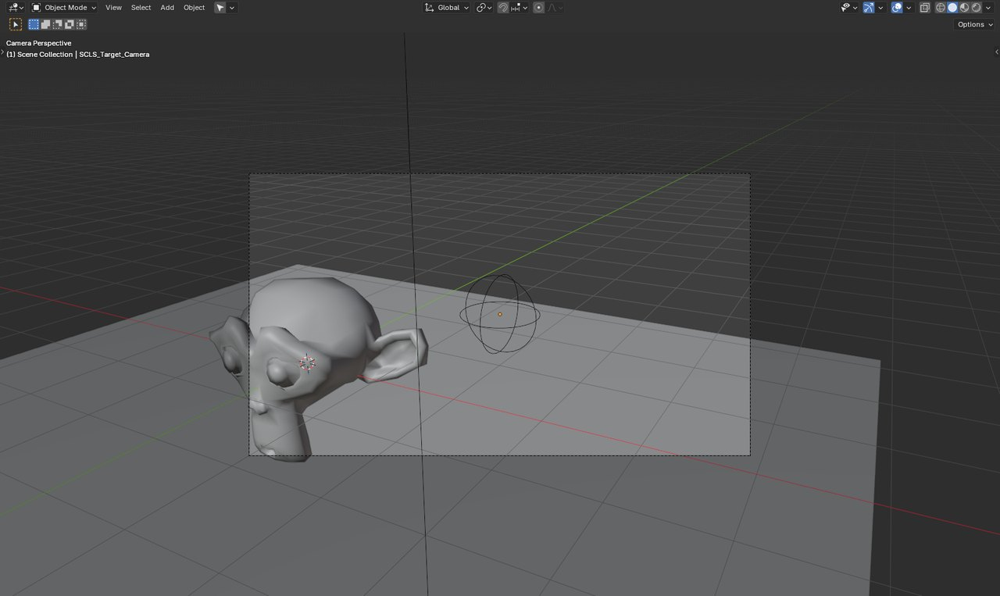
What to look for: Right after creation, the composition does not change. Seen from outside, a sphere marker has been created ahead of the camera. When you move the sphere sideways, the camera turns toward it, and Suzanne shifts toward the edge of the frame.
ExampleMove the Parent Box to Carry the Camera (Dolly Target Rig)(demonstrated on Suzanne)
Give the camera a parent Empty (the dolly) and a target. When you move the dolly, the camera moves while staying aimed at the target.

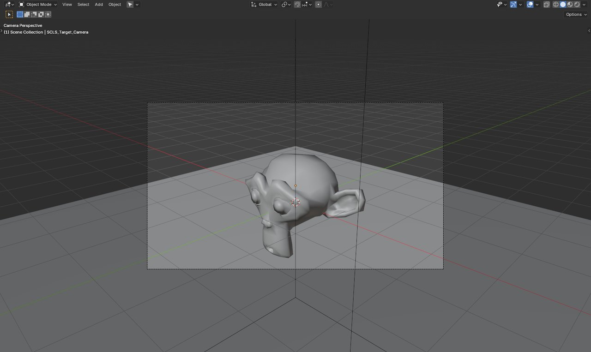
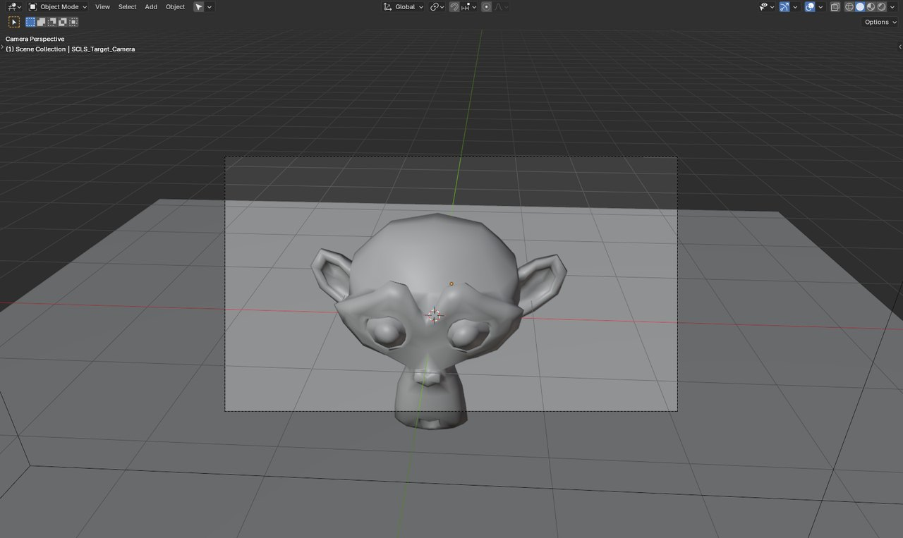
What to look for: Right after creation, neither the camera's position nor the composition changes. When you move the dolly, the camera moves with it and keeps facing the target, so Suzanne stays near the center of the frame and only the viewing angle changes.
Prepares for and performs an export with text (a stamp) burned onto the picture, for checking animation.
LocationSelected Camera > Animation Review
| Item | What it does |
|---|---|
| Use Review Stamps | Uses stamps. It is turned on from the start. |
| Stamp Camera Name / Stamp Frame / Stamp Scene | Choose the information to burn in. |
| Review Scale | The resolution scale (%) used when exporting with "Viewport" in this section header. |
| Prepare Review Stamps | Copies only the stamp settings to the scene, without rendering. |
| Viewport | Temporarily copies the camera's settings, renders the whole animation exactly as the viewport shows it, and writes it to the output path. When it finishes, the scene's settings are restored. |
Renders with extra margin added around the original picture. It increases the scene resolution and shortens the camera's focal length at the same time, so the original picture keeps the same size (in pixels) and the added pixels show the surroundings. Only one camera can be left expanded at a time. The resolution and focal length from before the expansion can be restored later.
LocationSelected Camera > Overscan
| Item | What it does |
|---|---|
| Enable Overscan | When turned on, the buttons that copy this camera's settings ("Apply", "Render", "Viewport", "All Cameras", "Apply All Custom Cameras", and the checkmark icon in the list) and "Live Per-Camera Sync" also use overscan. When it is off, they work with the original resolution and focal length. The "Apply" button below works regardless of whether this field is on or off. |
| Overscan Mode | "Percentage" expands by a percentage while keeping the aspect ratio. "Extra Pixels" adds the specified number of pixels to the top, bottom, left, and right edges (the width and height each increase by twice that amount). "Specific Resolution" specifies an exact size. |
| Overscan Percentage / Extra Pixels / Specific Width and Specific Height | Fields that appear to match the selected mode. |
| Apply | Remembers the scene's current resolution. It then sets the expanded size as the scene resolution and shortens the camera's focal length by the same amount (for an orthographic camera, it enlarges the scale of the area shown). The base size is the "Resolution" width and height for a camera with custom camera settings enabled, and the scene resolution for a camera without them. Clicking it repeatedly does not expand the picture further. When you apply it to a different camera, the previous camera's focal length is restored. |
| Revert Overscan | Restores the scene resolution to the remembered width, height, and scale, and also restores the focal length of the camera that was expanded. |
ExampleKeep the Same Picture and Add Surrounding Margin (Overscan)(demonstrated on Suzanne)
Increase the resolution by 30% and widen the camera's field of view by the same amount. Suzanne's size (in pixels) stays the same, and margin is added around her.

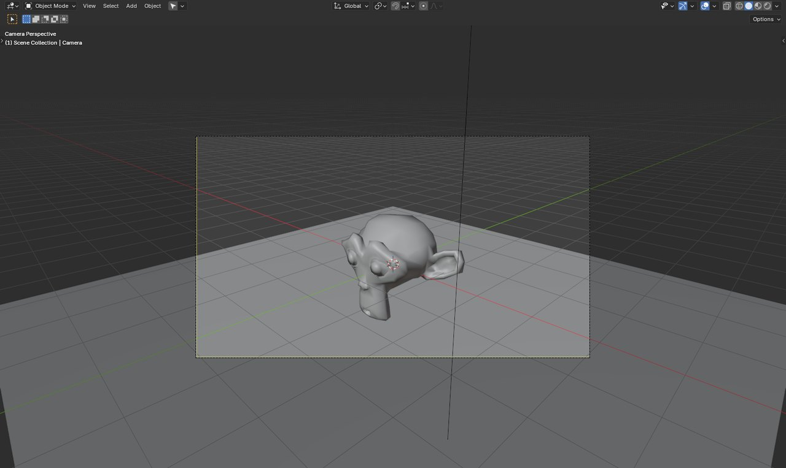
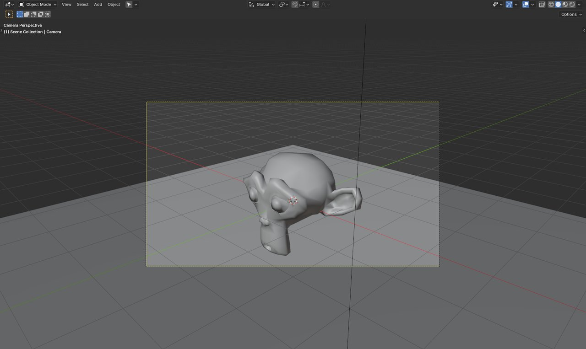
What to look for: After "Apply", the camera frame also shows the area around the floor, and Suzanne becomes smaller relative to the frame. The resolution increases to 2496 × 1404 and the focal length shortens from 50 mm to about 38.5 mm, so when rendered, Suzanne appears at the same pixel size with more margin on all four sides. "Revert Overscan" restores both the resolution and the focal length.
Sets the amount of motion blur using real-camera terms (shutter speed and shutter angle).
LocationSelected Camera > Physical Motion Blur
| Item | What it does |
|---|---|
| Enable Physical Motion Blur | Uses this feature with this camera. If it is not turned on, clicking "Refresh Motion Blur" below changes nothing. |
| Motion Blur Mode | Choose "Shutter Speed" or "Shutter Angle". |
| Shutter Speed | Enter a value such as 1/48. It is converted to Blender's value using the scene's frame rate. |
| Shutter Angle | Enter an angle. At 180 degrees, the amount equals exposing for half the duration of one frame. |
| Refresh Motion Blur | Turns on the scene's motion blur and writes the calculated values to Blender's motion blur settings. |
Turns the camera's position, orientation, and field of view into text for POV-Ray, a different renderer, and writes it to a Blender text (a document you can open in the Text Editor).
LocationSelected Camera > POV Export Helper
| Item | What it does |
|---|---|
| POV Note | A note added to the beginning of the exported text. |
| Include Depth of Field in POV Text | When the camera's "Use DOF" is turned on, also includes the focus information (aperture and focal point) in the text. |
| Create POV Camera Text | Creates the text. If you click it again, it deletes the previous text for the same camera and creates it again. |
A list of the lights in the scene, sorted by name. Click a name to select that light. If the scene has no lights, "No light exists in this scene." appears.
LocationSmart CamLight > Light > Scene Lights
| Item | What it does |
|---|---|
| + (Add Smart Light) | Creates a new light of the light type selected in "Light Generator" and aims it at the target. This light is treated as "Generated". |
| Funnel icon (show generated lights only) | Lists only the lights created by SmartCamLight Suite. Lights you created by hand are not deleted. |
| Open eye icon / closed eye icon (Set All Lights Visibility) | Shows or hides all lights in the scene at once, in both the viewport and the render. |
| Light name button | Selects that light. A hidden light is shown first and then selected. |
| Eye icon (Toggle Light Visibility) | Toggles that light's visibility in the viewport and in the render. |
| Lock icon (Toggle Light Lock) | Locks that light. A locked light can still be selected, but the setting fields in "Light Data" cannot be edited. |
| Trash can (Delete Light) | Deletes that light from the scene. The light's target is deleted along with it. |
Shows the name of the light you selected in the list. A light created by SmartCamLight Suite is marked "Generated", and a locked light is marked with a lock icon. Below this come "Light Data" and "Light Linking".
LocationSmart CamLight > Light > Selected Light
| Item | What it does |
|---|---|
| Generated | Indicates that the light was created by SmartCamLight Suite. |
| Lock icon | Indicates that the light is locked. |
Change the selected light's position, type, brightness, color, and more. While the light is locked, "Locked" is shown and the setting fields cannot be edited. It is open at first.
LocationSelected Light > Light Data
| Item | What it does |
|---|---|
| Object Name / Location / Rotation | The light's name, position, and orientation. |
| Type | The kind of light, such as Point, Sun, Spot, or Area. |
| Energy / Color | The brightness and the color of the light. |
| Shape / Size / Size Y | Appear with an area light. The shape and size of the glowing surface. |
| Soft Size | Appears with a point or spot light. The size of the light source, which affects how soft the shadows are. |
| Spot Size / Spot Blend | Appear with a spot light. The angle over which the light spreads, and the softness of its edge. |
| Target Size | The size of the light target icon. |
| Use Shadow | Makes this light cast shadows. |
| Max Bounces | Found in the "Cycles" box. The upper limit on the number of times light bounces. |
| Locked / Unlocked | A button that shows the current state. It reads "Unlocked" when the light is not locked and "Locked" when it is. Each click toggles the lock. |
| Create Light Target | Creates an Empty marker, makes the light always face it, and leaves the marker selected. The marker is placed at the position of the "Target Object", or of the object that is active in the 3D Viewport (other than lights and cameras). If neither exists, it is placed at the origin. The previous target marker and constraint are replaced with new ones. |
| Mirror X / Y | Duplicates the light, places the copy on the opposite side along the X or Y axis, and aims it at the target. The copy is treated as "Generated", and it becomes the selected light. |
| Isolate | Shows only this light and hides all the other lights. To bring them back, click the open eye icon next to the "Scene Lights" section header. |
ExampleAlso Place a Light on the Opposite Side (Mirror X)(demonstrated on Suzanne)
Duplicate the warm-colored light on the right, place it on the opposite side of the X axis (the left side), and aim it at Suzanne.
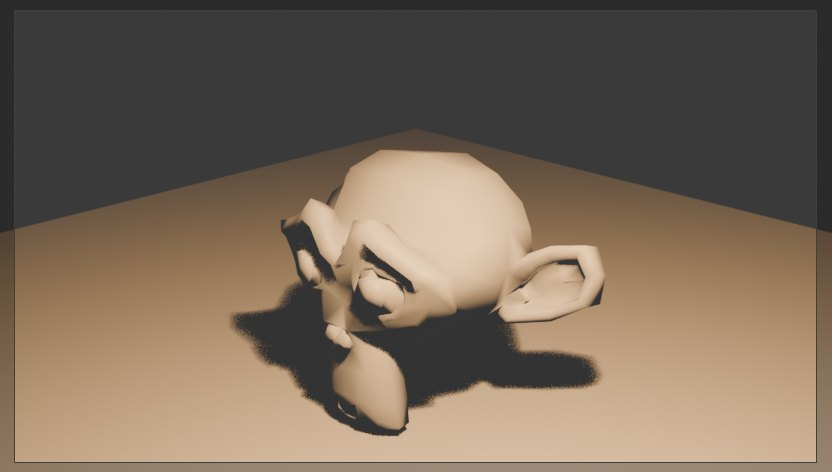
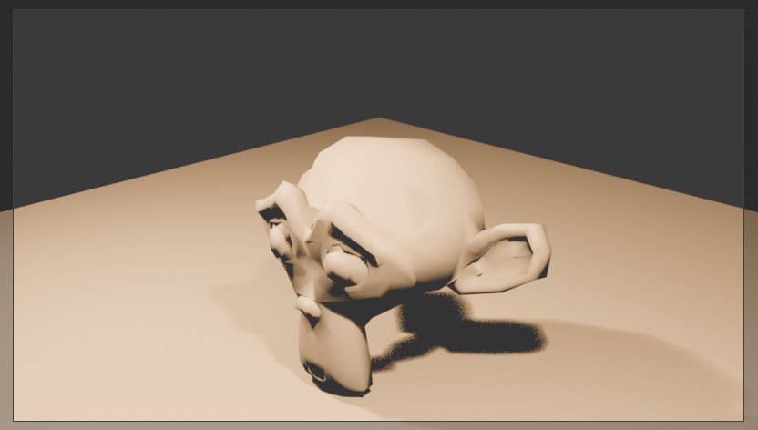
What to look for: Where the light came only from the right and cast a dark shadow on the left side of the image (the left as you face Suzanne), light of the same color and brightness now also comes from the left, and the dark shadow on the left disappears. Instead, a new shadow appears on the right.
Set light linking (which objects this light illuminates) and shadow linking (which objects cast shadows from this light) from the panel. First, click "Initialize" to create Blender's receiver and blocker collections (groups of objects). It is open at first.
LocationSelected Light > Light Linking
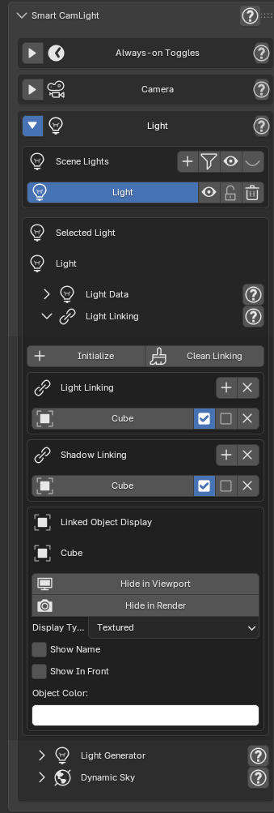
| Item | What it does |
|---|---|
| Initialize | Creates a receiver collection and a blocker collection for the selected light. The collections are placed directly under the scene. Before they are created, "Not Initialized" is shown. For the detailed steps of initialization, check the "?" on the section header. |
| Clean Linking | Deletes empty SmartCamLight Suite link collections that are not used by any light. |
| + in Light Linking / Shadow Linking (Add Selection to Linking) | Adds the objects selected in the 3D Viewport, other than lights, to the respective collection. |
| x icon on the right of the box header (Clear Light Linking) | After "Initialize", it appears to the right of the + in the "Light Linking" and "Shadow Linking" box headers. It removes that collection's assignment from the light. The light then illuminates all objects again (and all objects cast shadows from it again). Objects are not deleted. |
| Object name button (Select Linked Object) | Selects that object so you can edit it in "Linked Object Display" below. |
| Checkmark icon / empty checkbox icon (Set Link State) | The checkmark means "Include" and the empty checkbox means "Exclude". The icon for the current state appears pressed. In light linking, an object set to "Exclude" is no longer illuminated by this light; in shadow linking, an object set to "Exclude" no longer casts shadows from this light. The object is not removed from the list, so you can restore it right away. |
| x icon at the right end of an object row (Delete Linked Object) | Removes only that object from the collection. It is not deleted from the scene. It looks the same as the x on the box header, so be careful where you click. |
| Linked Object Display | Changes the selected object's "Hide in Viewport", "Hide in Render", "Display Type", "Show Name", "Show In Front", and "Object Color". Before you select an object, "No object selected" is shown. For the steps to select an object from the link list, check the "?" on the section header. |
ExampleMake This Light Illuminate Only Suzanne (Light Linking)(demonstrated on Suzanne)
Limit what one light illuminates to Suzanne only. Then remove the assignment to restore the original. Until you initialize it, the display reads "Not initialized". For detailed instructions, check the "?" help button in the section header.


What to look for: Clicking + stops the light from reaching the floor, so only Suzanne stands out brightly. Clicking the x icon lights the floor again. The light's position and brightness have not changed.
ExampleKeep an Object in the List from Being Lit (Link State)(demonstrated on Suzanne)
Add both Suzanne and the floor to light linking, then set only the floor to "Exclude" with the empty checkbox icon.
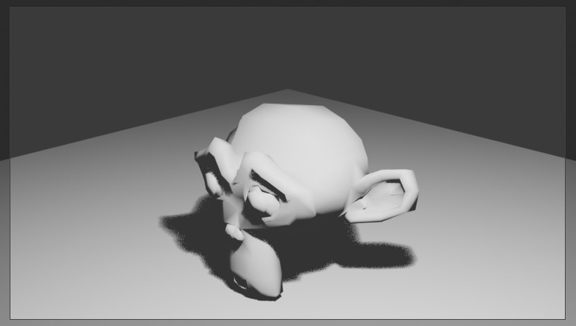
What to look for: Clicking the empty checkbox icon stops the light from reaching the floor, so only Suzanne is lit. Because this switches the state without removing the object from the list, clicking the checkmark icon restores it right away. The current state is shown by whichever icon appears pressed.
Creates many lights at once, using a ready-made lighting layout (a studio preset) or automatic light generation with a count and layout you choose. Lights you create are marked "Generated". The lights are placed around the target object, or around the object that is active in the 3D Viewport (other than lights and cameras). If neither exists, the origin is the center.
LocationSmart CamLight > Light > Light Generator
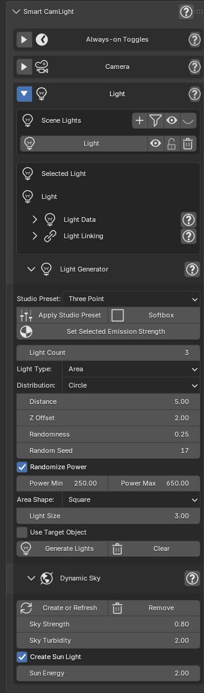
| Item | What it does |
|---|---|
| Studio Preset | Choose from "Three Point" (three lights: key, fill, and rim), "Soft Studio" (large, soft area lights), "Rim Circle" (spot lights surrounding the subject for outlines), "Product Strip" (long, thin lights for reflective products), and "Sky Fill" (a wide ceiling light and a sky world). |
| Apply Studio Preset | Creates the lights of the selected preset and aims them at the target. With "Sky Fill", it also creates the Dynamic Sky sky. |
| Softbox | Creates a glowing panel (a mesh that emits light) paired with an area light, placed "Distance" in front of the center and "Z Offset" above it, and aimed at the target. The panel's size is set by "Light Size" and its brightness by "Power Max". It illuminates objects in both EEVEE and Cycles. |
| Set Selected Emission Strength | Sets the emission strength of the material of the mesh you selected in the 3D Viewport, using "Strength" in the small window that appears. Materials without a Principled BSDF node are not changed. |
| Light Count / Light Type / Distribution | The number, type, and layout of the lights to create. Choose the light type from "Point", "Sun", "Spot", and "Area", and the distribution from "Circle", "Grid", "Random", and "Line". |
| Distance / Z Offset | The distance from the center and the amount of height offset. |
| Randomness / Random Seed | The amount of variation in placement, and a number that makes the variation the same every time. |
| Randomize Power / Power Min / Power Max | When turned on, the brightness varies between the minimum and the maximum. When turned off, all lights use the brightness of "Power Max". |
| Area Shape / Area Size X and Y / Light Size / Spot Size / Spot Blend | Size and shape fields that appear to match the light type and area shape. |
| Use Target Object / Target Object | Specifies the object to use as the center and aiming point of the lights. When you turn on "Use Target Object", the "Target Object" field appears. |
| Generate Lights | Creates the lights with the settings above. |
| Clear | Deletes the lights created by SmartCamLight Suite (those marked "Generated") and the glowing panels of softboxes. Lights you created by hand remain. |
ExampleSet Up Three-Point Lighting in One Step(demonstrated on Suzanne)
In a scene with no lights, create the three lights of a three-point setup (key, fill, and rim) at once and aim them at Suzanne.
What to look for: With no lights, the scene is pitch black and almost nothing is visible, but after applying, Suzanne and the floor are lit by three lights: a strong key light (front right), a weak fill light (front left), and a rim light from behind.
ExamplePlace a Glowing Panel and Light Pair (Softbox)(demonstrated on Suzanne)
Create a pair of a glowing panel and an area light above and in front of Suzanne. When you no longer need it, "Clear" removes it, panel and all.
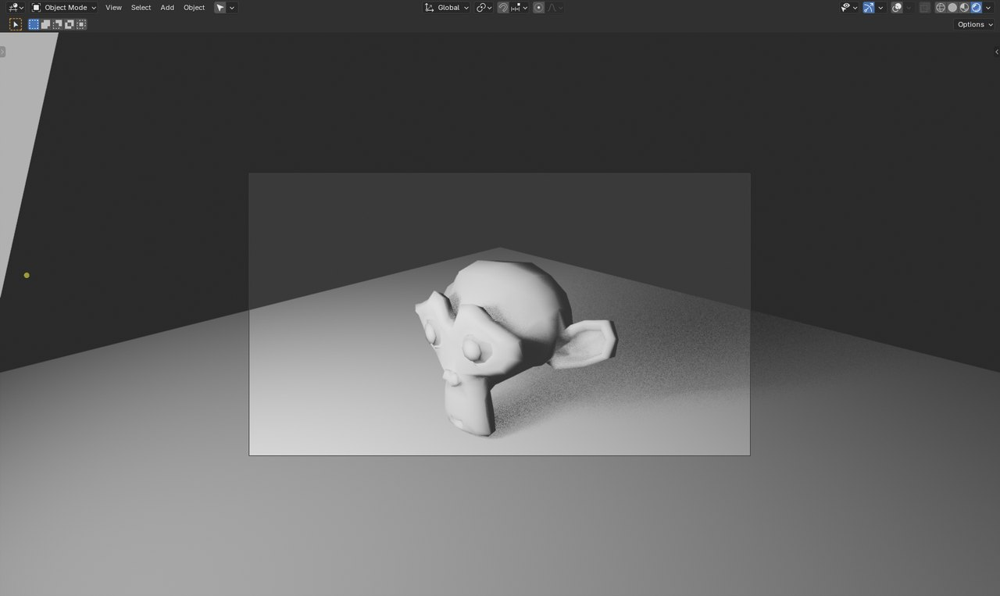
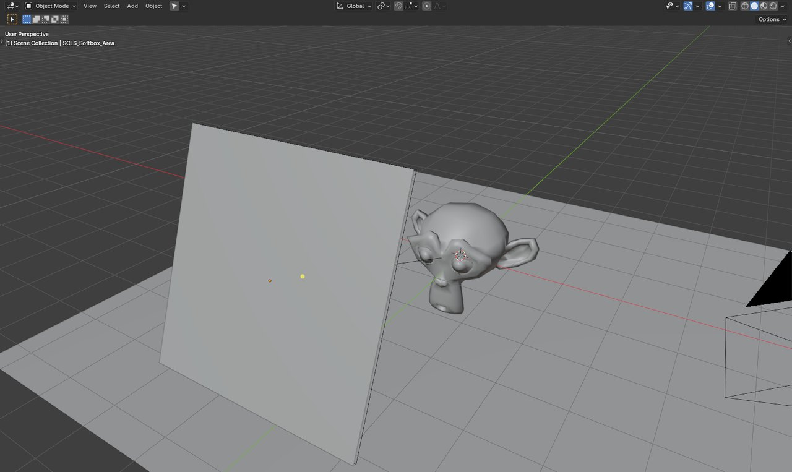
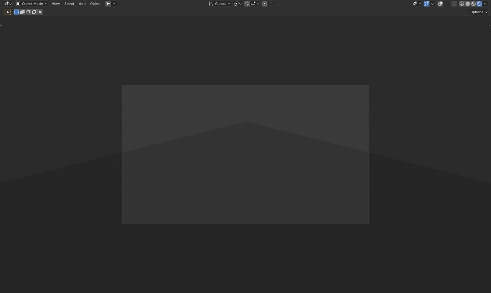
What to look for: Before, the scene is almost pitch black, but after clicking, Suzanne and the floor are lit by soft light coming from above and in front. Seen from outside, a panel facing Suzanne has been created. Clicking "Clear" removes both the light and the panel, returning to the original dark scene.
Creates a world that uses a sky texture (Sky Texture), separate from your original world. A sun light can be created at the same time. When you delete it, the world from before it was created is restored.
LocationSmart CamLight > Light > Dynamic Sky
| Item | What it does |
|---|---|
| Create or Refresh | Creates a sky world and makes it the scene's world. If one already exists, it applies the settings again. The nodes of the original world are not rewritten. |
| Delete | Restores the world from before creation and deletes the sky world and sun light created by SmartCamLight Suite. "Dynamic Sky Monitor" also returns to disabled. |
| Sky Strength | The brightness of the sky. |
| Sky Turbidity | How hazy the air is. |
| Create Sun Light / Sun Energy | Whether to create a sun light at the same time, and its brightness. Sun Strength appears when Create Sun Light is turned on. |
ExampleCreate the Sky and Sunlight Together (Dynamic Sky)(demonstrated on Suzanne)
Create a world with a sky texture and a sun light for outdoor lighting. The original world is not overwritten.
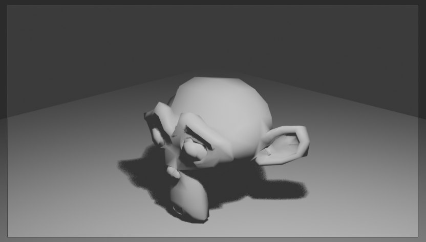
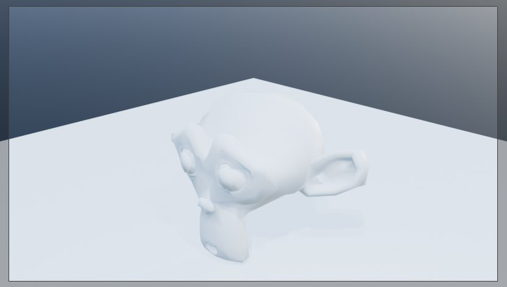
What to look for: The background changes from gray to a bluish sky color, and the whole scene is brightly lit by the sky light. The sharp shadows from before become fainter. Clicking "Remove" returns to the world from before the sky was created.
Use landscape and portrait cameras in one scene
Result: The render uses the resolution saved for that camera and is saved to the output path. When it finishes, the scene's settings are restored.
Change the camera for each cut
Result: When you play the animation, the active camera switches at the marker positions.
Create a viewport render with the camera name and frame number
Result: A movie with the camera name and frame number burned in is written to the output path.
Light a character or product with the basic three lights
Result: Key, fill, and rim lights are created and aimed at the target.
Separate the objects to illuminate with light linking
Result: The light illuminates only the objects included in the list.
For problems common to every add-on, such as an add-on not appearing or the interface language not changing, see "Troubleshooting" in the SmartTools Overall Specification.
| Add-on | SmartCamLight Suite (smart_camlight_suite) |
|---|---|
| Version | 1.0.0 |
| ZIP | SmartCamLightSuite_1.0.0.zip |
| Size | 118,574 bytes |
| SHA256 | 199d0564ccb6b4fbe4aa150b7fb5f7f73c1ca9e7be6bf15d148a0487a0713981 |
SmartCamLight Suite Manual v1.0.0 / Built 2026-11-19